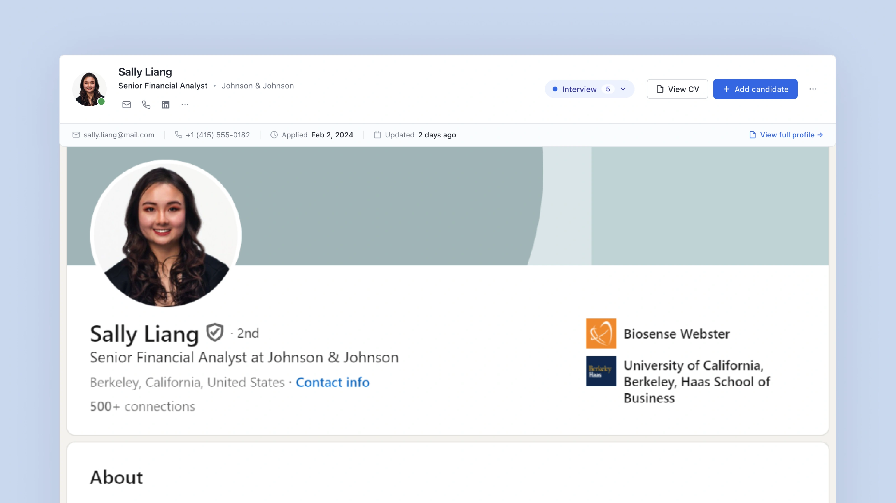
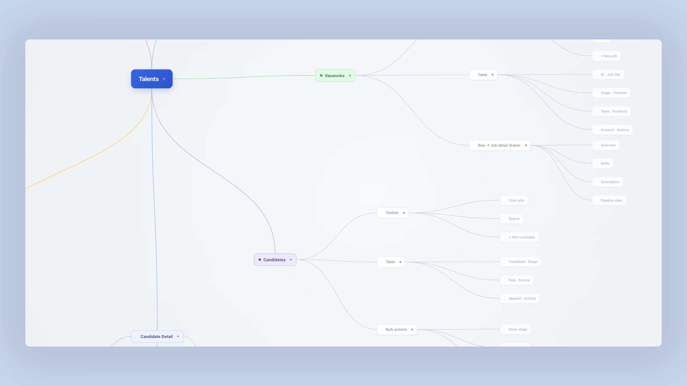
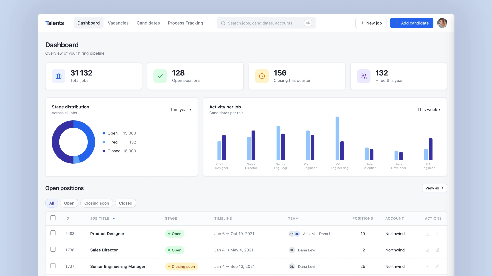
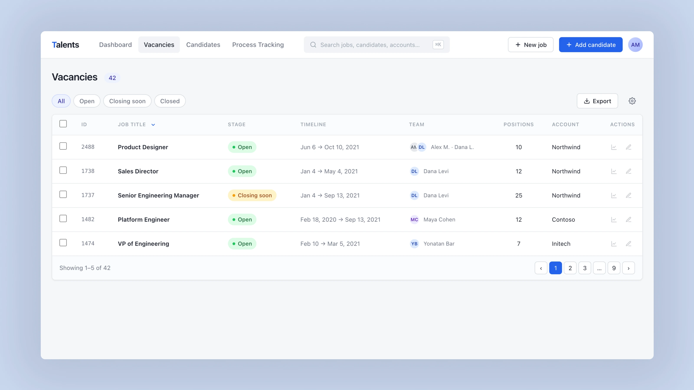
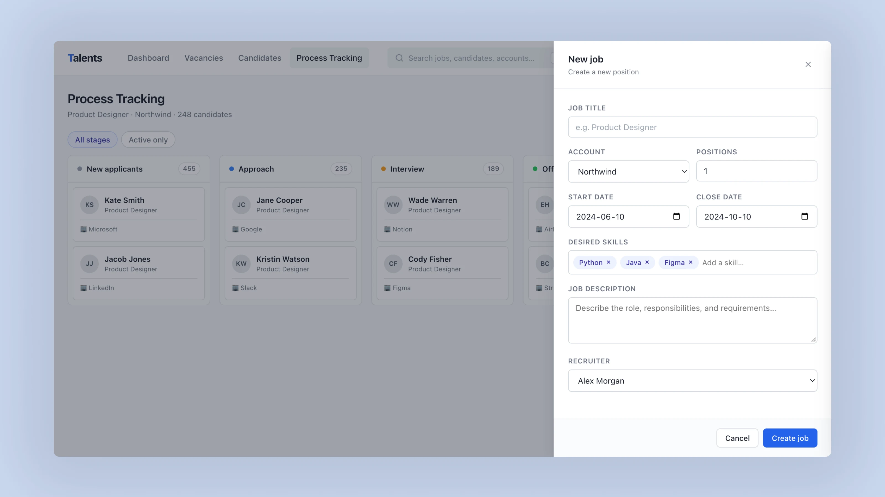

SUS score increased from 48 to 74
A three-month redesign of an HRMS platform for B2B recruitment teams, from research and IA restructure to usability testing with five recruiters.
I originally joined the company to design a browser extension for recruiters who sourced candidates on external websites. They had to copy profile details into the internal system manually, which made a routine task slower than it needed to be and created opportunities for mistakes.
After the extension shipped, the client asked me to redesign the HRMS as well. The extension made adding candidates easier, but the next part of the workflow was still difficult. Recruiters still had to navigate a system where finding information and completing everyday tasks was not always straightforward.

The browser extension panel, capturing essential candidate details without another long form.
I started by reviewing survey responses from 52 users, discussing the product with the CTO and Talent Acquisition Manager, and mapping the tasks recruiters handled in their day-to-day work.
44 of 52 survey respondents described the product as inconvenient or difficult to use. The feedback revealed several issues: important actions and required fields were easy to overlook, and the amount of information on screen made it difficult to find what mattered. Users also mentioned that the colours and overall layout were distracting.
These issues explained why recruiters found the system frustrating. Users had to spend a lot of time looking for information, and some actions were not visible.

Mindmap of the HRMS
I reworked the sitemap and explored different layouts through sketches before moving on to wireframes and an interactive prototype. Throughout the three-month project, I reviewed the designs with the CTO and developers to discuss proposed changes and make sure they could be implemented within the team's technical constraints.
The dashboard brought open vacancies, current activity, upcoming work, and shortcuts to common actions together on one screen. Here I focused on the information recruiters were most likely to need when opening the system. I wanted the dashboard to give recruiters a useful overview without becoming another dense screen to work through.

The new dashboard: open vacancies, activity, and shortcuts on one screen.
For the vacancies page, I moved towards a table layout that made it easier to scan multiple roles and compare their status at a glance. Search and filters helped recruiters find specific vacancies, while each row displayed the stage, key dates, and the person responsible for the role.
I kept the Open and Edit actions visible directly in each row instead of placing them inside a menu. This removed an extra step and made frequently used actions easier to find.

The new vacancies page, table layout with inline Open and Edit actions in each row.
Once the prototype was ready, I tested it alongside the original HRMS with five recruiters. We focused on three tasks they would encounter in everyday work: finding a vacancy, reviewing vacancy details, and editing candidate details. All five participants had between one and four years of experience using the original system.
The average time spent on each task was lower with the redesigned prototype:
| Task | Original HRMS | Redesigned | Improvement |
|---|---|---|---|
| Finding a vacancy | 2 min 40 sec | 1 min 50 sec | 31% faster |
| Reviewing vacancy details | 3 min 10 sec | 2 min 05 sec | 34% faster |
| Editing candidate details | 4 min 20 sec | 2 min 55 sec | 33% faster |
The biggest difference was in reviewing vacancy details, which took an average of 2 minutes and 5 seconds with the prototype, compared with 3 minutes and 10 seconds in the original HRMS.
The SUS score increased from 48 for the original HRMS to 74 for the redesigned prototype. This suggests that participants had a more positive perception of the redesigned experience.

Usability testing, SUS score improved from 48 to 74.
"Before, I wasn't sure where to click to edit, it was so frustrating. Now I see the edit button clearly right there in the row."
— Recruiter, 2 years in roleThat comment reflected a practical goal of the redesign: recruiters should not have to search for a basic action every time they need to use it.
The study involved only five participants, so I treated the findings as an early indication rather than a prediction of post-launch results.
Working on the extension first gave me a close look at one part of the recruiting process, but it also showed that making one task faster does not necessarily improve the overall experience. Recruiters could add candidates more easily, yet still lose time trying to find information or work out where to make changes.
In the HRMS redesign, I focused on the parts of the interface that affected those everyday tasks: how information was organised, what recruiters could see at a glance, and how easily they could access common actions. The usability tests showed encouraging improvements across all three tasks, helping the team decide what to build and test next.
The company name and some project details have been changed due to an NDA. The work and outcomes are real.